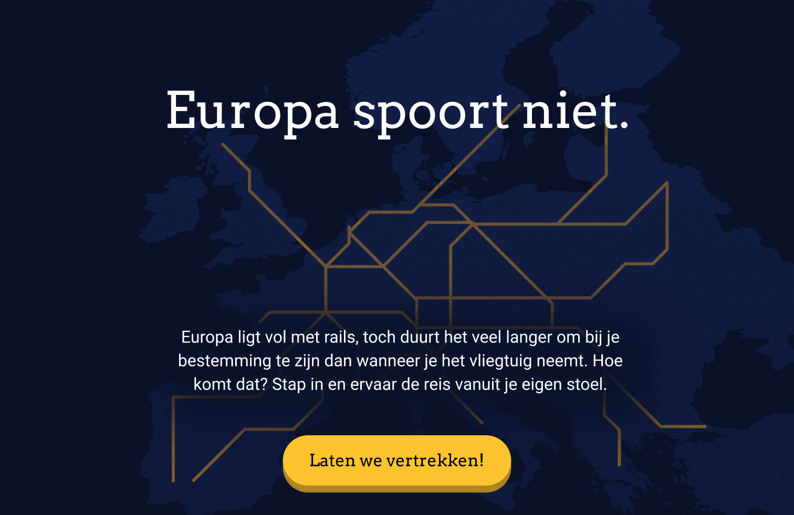

Europa spoort niet
January 2025
The challenge
For this project, I was asked to pick a current issue in the world that you're passionate about and create a visual and interactive explainer on this subject. I decided to base my project on the problems in the European rail network.
Illustration and animation
For this prototype, I made every illustration myself in Adobe Illustrator. I wanted to explore more with illustration and animation in my designs and I got inspired by other artworks using noise-grains. Using figma, I animated and prototyped these illustrations into a functioning design.
Storytelling and copywriting
I wanted to highlight the issues with the international rail network into a story that the user can walk through. To do this, I wrote the text in a lighthearted and informal way which tells the story in a fun and clear way. To make sure that I got the tone of voice exactly right, I asked other students to review different pieces of text and point out their preference.
The result
This project increased my illustration and storytelling skills by a lot. I really enjoyed making my own illustrations and seeing them come to life as a clear and fun prototype. I also incresed my Figma skills by prototyping every single action the user can take and adding animations.